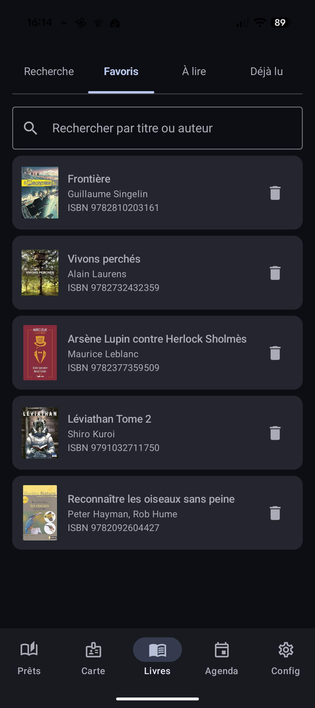

Enregistrez vos envies, gardez vos coups de cœur
Croisé sur Internet, recommandé par un proche, aperçu en rayon… Biblio Cuers retient pour vous ce qui vous plaît, d'un simple geste.
Deux listes, deux usages
❤️ Favoris
Vos coups de cœur : les livres que vous avez aimés et que vous voulez retrouver, prêter à un proche, ou simplement garder en mémoire.
🔖 À lire
Vos prochaines lectures en attente : repérés par un ami, vus à la médiathèque… ils n'attendent que le prochain emprunt.
En pratique
- Depuis n'importe quelle fiche de livre, un seul geste pour « Favori » ou « À lire ».
- On peut distinguer un même livre des deux façons : il apparaît alors dans les deux listes.
- Les deux listes affichent couverture, titre, auteur et ISBN, et sont consultables même sans connexion.
- Une recherche dans la liste aide à retrouver un titre quand beaucoup s'y accumulent.
Les points forts
- Des listes personnelles et hors ligne : à vous, disponibles où que vous soyez.
- Le geste est réversible et immédiat : on peut retirer ou ranger un livre à tout moment.
- Sans doublon grâce à l'ISBN : une fiche enrichie plus tard complète la même entrée au lieu d'en créer une seconde.
